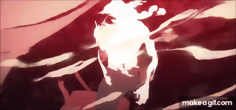
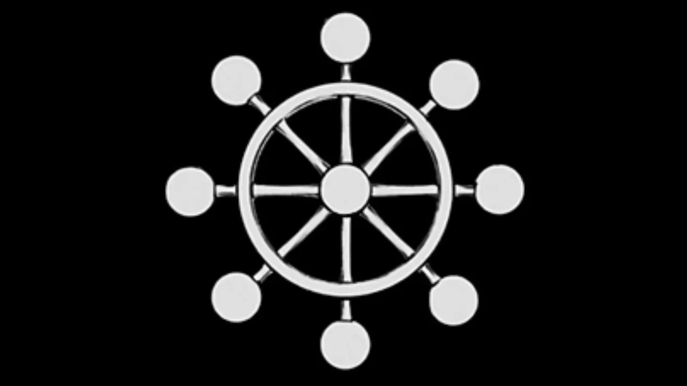

Mahoraga
General Divino

O Mahoraga é um dos dez chiquigames que o megume possui. dentro da sua técnica das dez sombras. Técnica é essa. que possui chiquigames extremamente poderosos.
Mahoraga significa no Budismo Japonês, um anjo ou fada, uma pessoa celestial e bela que pode aparecer numa montanha.
O seu poder é se adaptar a qualquer coisa. Se ele for ferido por qualquer ataque, a roda do darma vai girar permitindo que ele se adapte, se regenere. Isso significa que. se o oponente usar o mesmo ataque várias vezes, mahoraga vai ser capaz de contra atacar.
 A invocação de Mahoraga é bem diferente da dos outros shikigami de Megumi. Até então, ninguém conseguiu subjugar Mahoraga para poder controlá-lo. Chamá-lo é basicamente uma sentença de morte para o invocador.
Ela invoca shikigamis usando as sombras como meio, mas tem uma condição pra poder invocar cada shikigami. No começo, o feiticeiro recebe dois cães divinos da técnica. Pra usar outros shikigamis, ele precisa exorcizar ele junto músicas divinos, então ele vai ganhando o cheque games. que ele pode usar pra exorcizar.

Embora pareça que o mahoraga não tem nenhuma fraqueza, existe sim uma maneira de conseguir derrotar ele. Pra superar a regeneração rápida do mahoraga, ele deve ser derrotado por um ataque de. diferente do que ele foi atingido antes. No caso do Sukuna, ele teve sorte.
Uma boa teoria para sua fraquesa seria o vazio roxo.
O Vazio Roxo quando se tem atração e repulsão ao mesmo tempo. Assim como as cores azul e vermelho formam roxo. basicamente, quando essas duas técnicas se unem, elas formam meio que uma falha na realidade, tornando assim o vazio roxo basicamente um buraco negro, só que roxo, modo que quando lançado é meio que muito forte. O único usiario desta tecnica é o Go/jo.